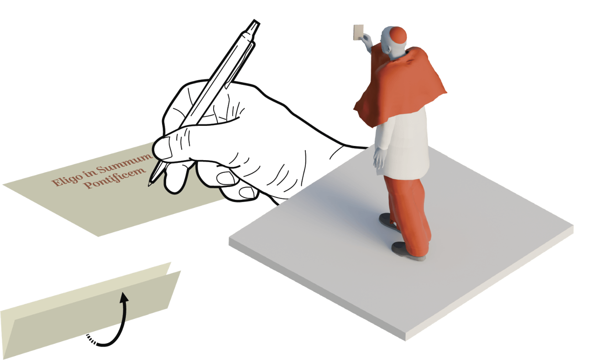

Desde el 7 de mayo, el mundo católico estará a la espera de la elección del sucesor del papa Francisco, quien será el pontífice número 267 de la historia. Se trata de un evento lleno de simbolismo y tradición que se remonta a los primeros siglos de nuestra era. La atención estará puesta en el humo blanco que anunciará al nuevo heredero del trono de San Pedro.
Cardenales: los príncipes de la Iglesia
Los cardenales católicos romanos son nombrados por el Papa y en caso de muerte o renuncia del pontífice tienen la misión de escoger a su sucesor. El término viene del latín ‘cardo’ que se traduce como bisagra, esto se refiere a que tienen la función de ayudar en la administración de la Iglesia.
Jerarquía
-
1
Cardenales obispos
Son los de mayor rango en el Colegio Cardenalicio. Ellos eligen al decano y vicedecano de su institución, cargos que luego son confirmados por el Papa.
-
2
Cardenales presbíteros
Tienen asignada la titularidad de una diócesis o arquidiócesis importante en cualquier parte del mundo.
-
3
Cardenales diáconos
Pertenecen a una orden eclesiástica inmediatamente inferior al sacerdocio. Sirven a la Santa Sede en la Curia Romana o en otras funciones especiales.
Vestimenta formal para ceremonias
El rojo carmesí significa que estos religiosos son los primeros que deberían verter su sangre para dar testimonio de Cristo (mártires).
Paso a paso de la elección papal
El Colegio Cardenalicio
Es un órgano de la alta jerarquía De la Iglesia Católica que reúne a todos los cardenales creados por los pontífices. Se encarga de elegir al Papa en caso de fallecimiento o renuncia, así como de asesorar y asistir.

Países de procedencia de los cardenales
El proceso
El encargado principal del cónclave es el decano del Colegio Cardenalicio, que en la actualidad es Giovanni Battista Re. Sin embargo, al tener 91 años no estará presente. El vicedecano también supera los 80 años, por lo que la responsabilidad recaerá en otro cardenal y obispo de mayor rango: el italiano Pietro Parolin.
Los encargados de la votación
Se eligen por sorteo tres grupos de tres cardenales que supervisarán la votación.
-
Los revisores se encargan comprobar el recuento
-

Los ‘infirmarii’ se encargan de recoger el voto de los purpurados enfermos
-
Los escrutadores recolectan los votos de los cardenales.
1
Extra omnes
Una vez que los cardenales han ingresado a la Capilla Sixtina, cada uno apoya la mano sobre los evangelios y juran guardar el secreto de las deliberaciones. Luego el maestro de ceremonias declama el Extra Omnes (todos fuera) para que salgan los que no son cardenales electores.
2
Reglas
El voto es secreto
No son válidas las elecciones por proclamación.
Para que sea válida la elección se necesitan dos tercios o más de los votos.
No se aceptan vetos de ningun tipo.
3
Las papeletas
Se reparten de tres a cuatro de estas a cada cardenal. Las papeletas llevan la frase “Eligo in Summum Pontificem”.
4
Luego de escribir el nombre de su candidato, el elector dobla el papel y lo lleva en alto mientras camina al altar.

5
La papeleta con el voto se coloca sobre una patena (placa que se usa para colocar las hostias) desde donde se desliza al interior de la urna.

7
La fumatta
Terminada la votación se llevan las papeletas a la estufa para quemarlas y dar a conocer el resultado mediante la fumatta.
8
Aceptación y presentación
Una vez concluida la votación, el cardenal más joven avisará al maestro de ceremonias y al secretario del Colegio Cardenalicio, quienes ingresarán a la capilla para preguntarle al Papa electo si acepta su designación y qué nombre va a utilizar.
El cardenal protodiácono de los votantes se acerca al balcón de la Basílica de San Pedro para exclamar: ¡habemus papam!. Luego se menciona su nombre y el Sumo Pontífice recien electo sale a dar su primer discurso.